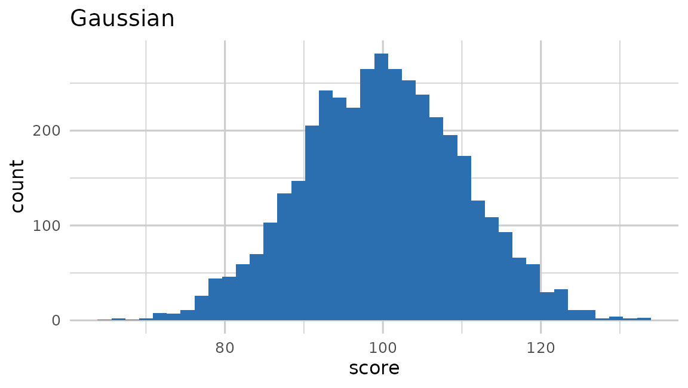
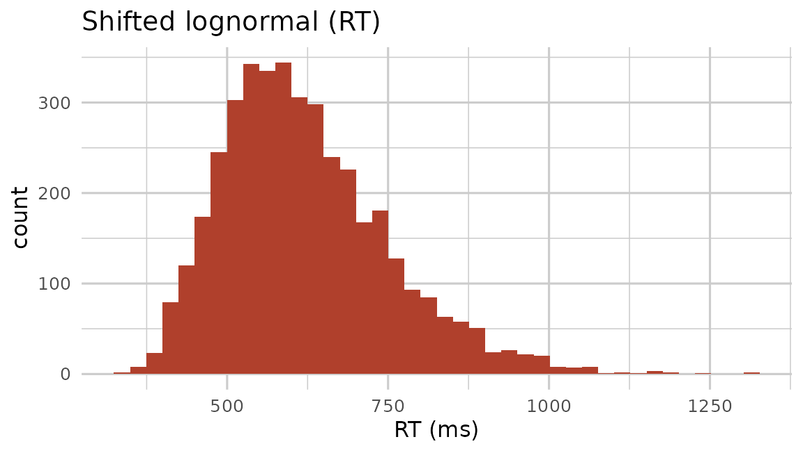
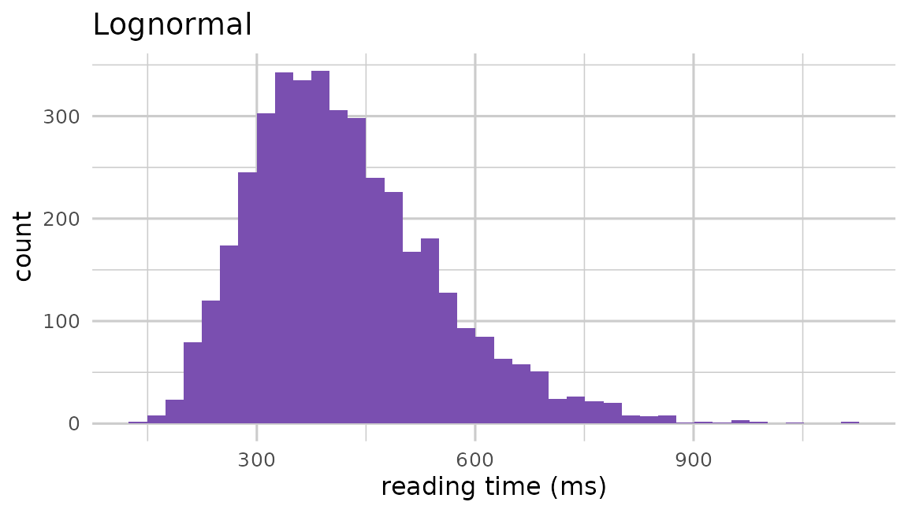
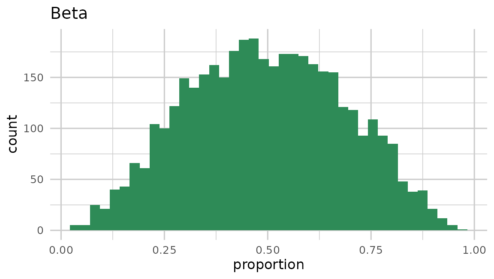

Behavioural outcomes are seldom Gaussian. pilotr maps the linear predictor to an outcome through one of seven response families. An important consequence is that the fixed intercept and effect live on the family’s own scale. That scale is the identity for Gaussian, the log scale for reaction times and counts, and the logit scale for accuracy, ordinal and proportion outcomes. This vignette presents each family with scale-appropriate parameters.
The helper below builds a two-group between-subjects design and reports the group means.
demo <- function(family, intercept, effect, n = 4000, ...) {
spec <- build_spec(list(
name = family, seed = 1, design_kind = "between", n_subject = n,
factor_name = "group", lev1 = "control", lev2 = "treatment",
intercept = intercept, effect = effect, family = family, resp_name = "", ...))
d <- simulate_design(spec)
y <- d[[spec$response$name]]
list(spec = spec, data = d, y = y, by_group = tapply(y, d$group, mean))
}
library(ggplot2)
fam_hist <- function(y, fill, title, xlab) {
ggplot(data.frame(y = y), aes(y)) +
geom_histogram(bins = 40, fill = fill, colour = NA) +
labs(title = title, x = xlab, y = "count") +
theme_minimal(base_size = 12) +
# theme_minimal still paints a white plot.background over the transparent device
# canvas, so both surfaces have to be cleared for the page colour to reach the
# figure. The ink stays at its default: the website inverts the figure in dark mode,
# which turns the dark axis text light of its own accord.
theme(plot.background = element_rect(fill = NA, colour = NA),
panel.background = element_rect(fill = NA, colour = NA),
panel.grid = element_line(colour = "grey80"))
}Gaussian
This is the default, with
and residual standard deviation sigma. It suits continuous,
roughly symmetric outcomes such as ratings averaged over many trials or
standardised scores.
g <- demo("gaussian", intercept = 100, effect = 5, sigma = 10)
round(g$by_group, 2)
#> control treatment
#> 97.50 102.41
fam_hist(g$y, "#2C6FB0", "Gaussian", "score")
Shifted lognormal (reaction times)
Reaction times are right-skewed and bounded below. pilotr models them
as
,
with the effect on the log scale. An intercept of 6 implies a typical RT
near exp(6) ms above the shift.
rt <- demo("shifted_lognormal", intercept = 6, effect = 0.1, sigma = 0.3, shift = 200)
round(rt$by_group, 1)
#> control treatment
#> 600.6 642.6
fam_hist(rt$y, "#B0402C", "Shifted lognormal (RT)", "RT (ms)")
Lognormal (positive continuous)
The plain lognormal family is the shifted lognormal
without the shift,
,
suited to positive continuous outcomes such as per-word reading times.
As with reaction times the effect is on the log scale.
ln <- demo("lognormal", intercept = 6, effect = 0.1, sigma = 0.3)
round(ln$by_group, 1)
#> control treatment
#> 400.6 442.6
fam_hist(ln$y, "#7A4FB0", "Lognormal", "reading time (ms)")
Bernoulli (accuracy)
Binary accuracy is modelled through a logit link. The intercept is the log-odds of a correct response, and the effect is a log-odds difference between conditions.
Poisson (counts)
Counts via a log link (e.g. number of fixations, errors, or events).
An intercept of 1.5 implies a base rate near exp(1.5).
Ordinal (Likert)
Ordered categorical responses via a cumulative-logit model with user thresholds. The effect shifts the latent distribution across the thresholds.
ord <- build_spec(list(
name = "likert", seed = 1, design_kind = "between", n_subject = 4000,
factor_name = "group", lev1 = "control", lev2 = "treatment",
intercept = 0, effect = 0.8, family = "ordinal", resp_name = "rating",
thresholds = "-2, -0.6, 0.6, 2"))
r <- simulate_design(ord)
round(prop.table(table(r$group, r$rating), 1), 2) # category proportions by group
#>
#> 1 2 3 4 5
#> control 0.16 0.30 0.27 0.19 0.08
#> treatment 0.09 0.18 0.29 0.28 0.17Beta (proportions)
Bounded proportions in (0, 1) are modelled through a mean–precision
parameterisation. The mean is logit⁻¹(η) and
phi is the precision, with larger values giving a tighter
distribution.
bt <- demo("beta", intercept = 0, effect = 0.8, phi = 8)
round(bt$by_group, 3) # mean proportion by group
#> control treatment
#> 0.400 0.592
fam_hist(bt$y, "#2E8B57", "Beta", "proportion")
Choosing a family
| Outcome | Family | Scale of the effect |
|---|---|---|
| Continuous, symmetric | gaussian |
identity |
| Reaction time | shifted_lognormal |
log |
| Positive continuous (e.g. reading time) | lognormal |
log |
| Accuracy (0/1) | bernoulli |
logit |
| Counts | poisson |
log |
| Likert / ordered categories | ordinal |
logit (cumulative) |
| Proportions in (0, 1) | beta |
logit (mean) |
These match the families that researchers fit in lme4,
glmmTMB and brms, so a design simulated here
corresponds to the model that will later be fit. The point-and-click
application exposes six of the seven families. The full engine,
including the plain lognormal, continuous predictors, interactions,
nesting and partial crossing, is available by writing the specification
directly, as shown next.
Writing the specification directly
The specification is a plain list, so richer designs than the builder
covers can be assembled by hand. Starting from a
build_spec() result, the example below adds a continuous
item-level predictor, an interaction with the categorical effect, a
per-subject item subset (partial crossing) and an extra grouping factor
that nests subjects.
spec <- build_spec(list(
name = "reading", seed = 1, design_kind = "within", include_items = TRUE,
n_subject = 12, n_item = 24,
factor_name = "condition", lev1 = "related", lev2 = "unrelated",
intercept = 6, effect = 0.05,
subj_int_sd = 0.12, subj_slope_sd = 0.04, subj_corr = 0.2,
item_int_sd = 0.08, item_slope_sd = 0.02, item_corr = -0.1,
family = "lognormal", resp_name = "RT", sigma = 0.25))
spec$predictors <- list(list(name = "freq", varies_by = "item", mean = 0, sd = 1))
spec$fixed$coefficients[["effect:freq"]] <- 0.02 # an interaction with the effect
spec$units$item$per_subject <- 10 # each subject sees 10 of the 24 items
spec$random$class <- list(over = "subject", n = 6, intercept_sd = 0.05) # subjects nested in classes
head(simulate_design(spec))
#> subject item class condition freq RT
#> 1 1 2 1 related 2.355932 558.9340
#> 2 1 2 1 unrelated 2.355932 609.7181
#> 3 1 7 1 related -2.020596 449.9641
#> 4 1 7 1 unrelated -2.020596 630.8554
#> 5 1 8 1 related 1.017863 507.4829
#> 6 1 8 1 unrelated 1.017863 445.2669The derived columns follow from the specification: freq
is the continuous predictor and class is the nesting
factor. The auto-derived formula picks up the interaction as
effect_freq and the extra grouping factor as
(1 | class).
model_formula(spec)
#> .y ~ effect + effect_freq + (1 + effect | subject) + (1 + effect |
#> item) + (1 | class)Ready-to-run specifications of this kind, including a
continuous-predictor reading-time design, a nested-clusters design and a
partial-crossing design, ship in the repository’s spec/examples/
directory, and load_spec() reads any of them back.